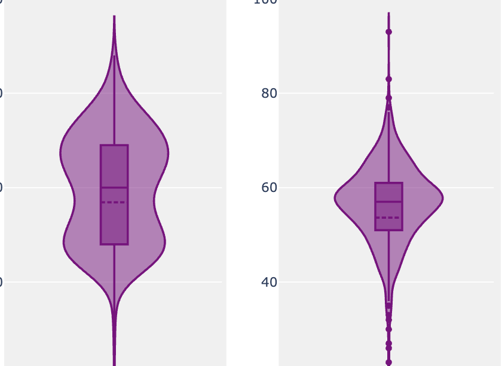
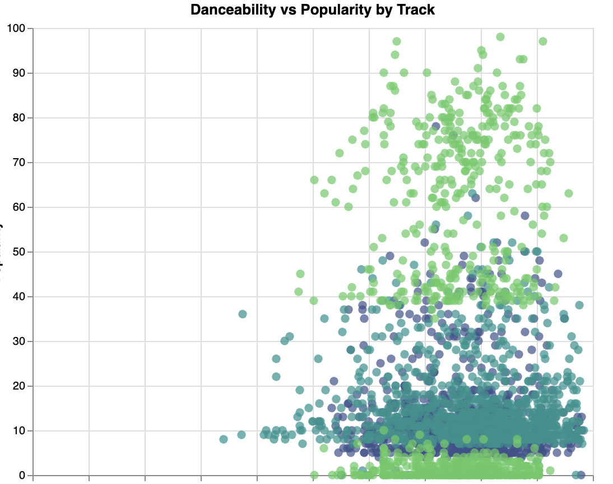
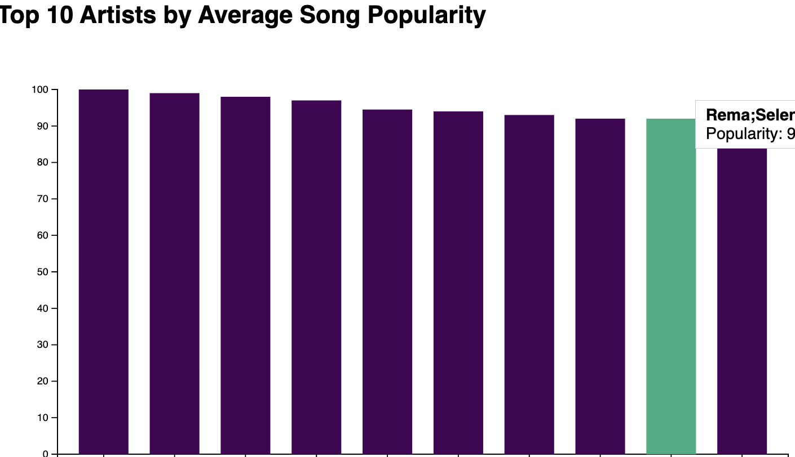
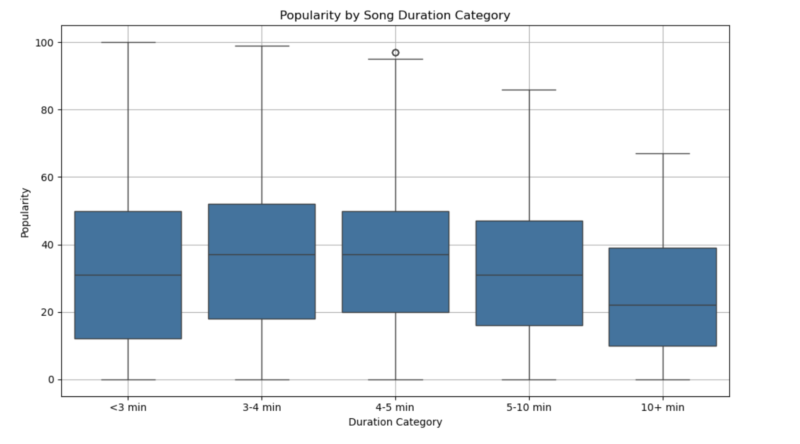

Heatmap - Popularity

This visualization attempts to show the relationship of all features with popularity
What this plot does
- The heat map shows that all features appear to be objectively loosely related to popularity. However, in relative terms, popularity is the most strongly correlated with loudness and danceability.
- The correlation between energy and popularity is very low (0.00), suggesting that energy levels do not have a meaningful relationship with the popularity of a song, as opposed to our initial believes.
- Despite some features showing weak correlations with popularity (such as tempo and danceability), loudness remains the strongest (0.05) factor in determining popularity, but due to its manual controllability, we focus on danceability (0.04) for more insights on our analysis.
Popular Genre Distribution
This visualization shows the distribution of the 3 most popular genres and allows the user to choose the 4th genre from the drop down.
What this plot does
- The goal with this plot is to understand the popularity distribution of various genres of songs by comparing them against the distributions of 3 most popular genres. The first three graphs display the popularity distribution for the three most popular genres: pop-film, k-pop, and chill. These distributions show how popularity is spread across these genres, with some genres having a wider range of popularity values.
- This analysis revealed to us that 'pop-film' has a normal distribution with multiple outliers. 'k-pop', however, is bi-modal, and ranges across a wide margin of popularity. The bi-modal distribution points to the existence of two major bands / artists / sub-genres. Although 'chill' has a wider range, it is uniformally distributed as well!
- The fourth graph allows you to select any genre from a dropdown menu, enabling you to explore the popularity distribution of a specific genre beyond the fixed ones, offering more flexibility in analysis: Niche music styles like 'iranian' tend to attrack smaller groups of audience, and their popularity starts and ends within a range of 40. Whereas, 'edm' is spread across the entire relvant range and displays a bi-modal distribution.
Popularity Distribution of the top 3 most Danceable Genres
This plot shows the distribution of three most danceable songs while comparing their danceability.
What this plot does
- In the first analysis, we concluded that danceability is the strongest, manually unalterable correlated feature to popularity. This prompted us to compare the danceability of three most danceable song genres.
- Upon conducting the analysis, we observe that the danceability of three most danceable genres - 'kids', 'chicago-house', 'reggaeton' - is approximately the same (.79).
- Next, we used the interactive feature which let us view the scatter plot distribution of these genres' popularities. We noticed that the popularity of 'kids' ranges from 10 to 25, 'chicago-house' from 3 to 20, and 'reggaeton' had an interestig distribution. First cluster ranged from 0 to 10 and the second cluster ranged from 40 to 100, and no songs between the 10 to 40 range of popularity. This reveals the existence of two primary sub-genres or artists!
Top 10 Artists by Average Song Popularity
We analyze how song duration relates to the popularity of songs across different duration categories.
What this plot does
- The top 10 artists with the highest popularity, such as Sam Smith & Kim Petras, Beyoncé, and Drake, demonstrate a wide range of danceability, indicating that factors beyond danceability, such as artist reputation and fan engagement, likely play a larger role in their success.
- The interface allows for deeper exploration of features like danceability, letting users compare how these characteristics influence the popularity of different artists and genres.
- "danceability" alone shows a minimal impact on the rankings of the most popular tracks.
Exploring Popularity
This visualization explores song duration and popularity
What this plot does
- The box plot reveals that songs with a duration of 4-5 minutes and 5-10 minutes have slightly higher median popularity compared to shorter or longer songs.
- The popularity distribution across different song duration categories, providing insight into how length influences song success.
- This suggests that smaller song duration might be more favorable for popular tracks.
Conclusion
From our analysis, we observed several key trends in music popularity. Most songs tend to be short, with a peak duration of 2-4 minutes, and longer songs (over 10 minutes) are rare. Additionally, shorter songs tend to be more popular, as indicated by a negative correlation between duration and popularity—songs under 10 minutes are more likely to have higher popularity ratings. Genre also plays a role in popularity distribution. In the case of alt-rock, the data reveals a bimodal trend, where some songs achieve moderate to high popularity while others remain obscure. Meanwhile, danceability appears to have a slight positive relationship with popularity across acoustic, punk-rock, and progressive-house genres. Punk-rock songs tend to be more common at higher danceability values, whereas progressive-house tracks are more consistently clustered in the mid-range of both metrics. Overall, our findings suggest that shorter, more danceable songs generally perform better in terms of popularity. However, genre-specific trends highlight that other factors, such as niche appeal and audience preferences, also play a significant role in a song’s success.